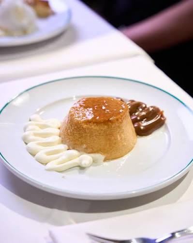
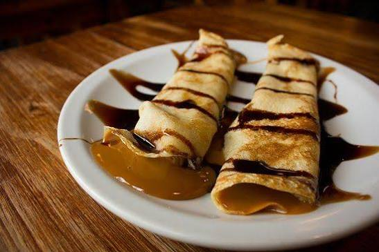
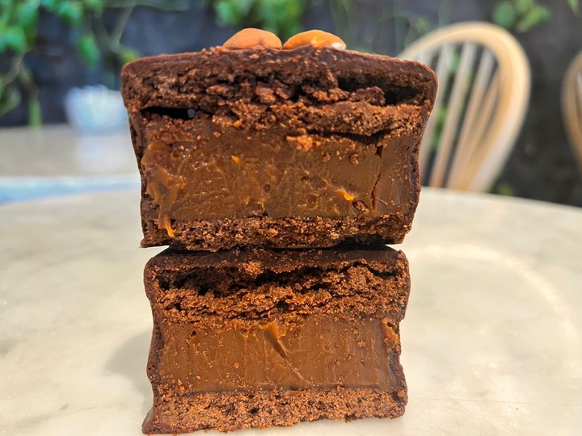
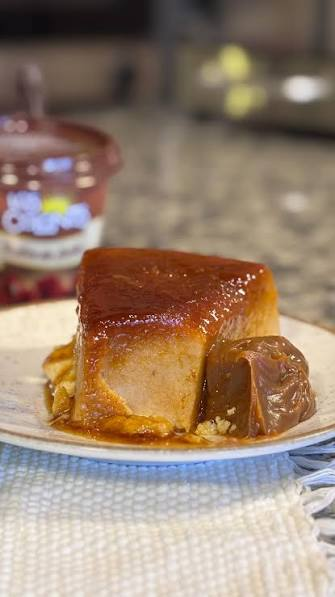
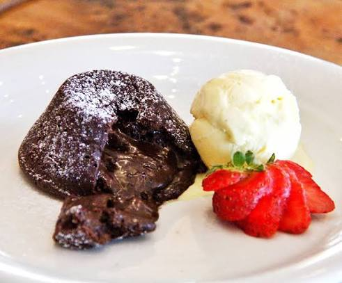
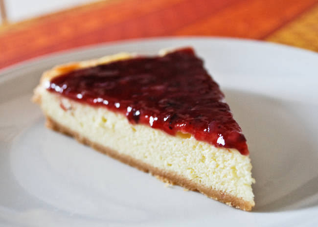
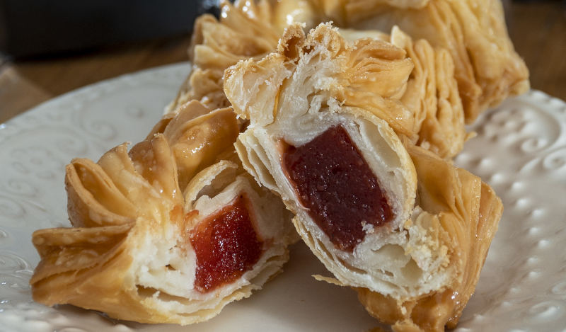
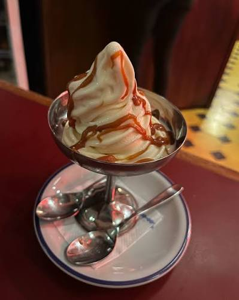

Postres
-
Flan casero
Flan tradicional acompañado con dulce de leche.

-
Panqueques con dulce de leche
Panqueques caseros rellenos con dulce de leche.

-
Alfajores de chocolate
Alfajores artesanales rellenos de dulce de leche y cubiertos con chocolate.

-
Budín de pan
Postre casero elaborado con pan, leche, huevos y caramelo.

-
Volcán de chocolate
Bizcocho de chocolate con centro cremoso y caliente.

-
Cheesecake de frutos rojos
Cheesecake cremoso acompañado con frutos rojos.

-
Pastelitos criollos
Pastelitos tradicionales rellenos de membrillo y espolvoreados con azúcar.

-
Helado artesanal
Selección de sabores de helado artesanal para finalizar la comida.
